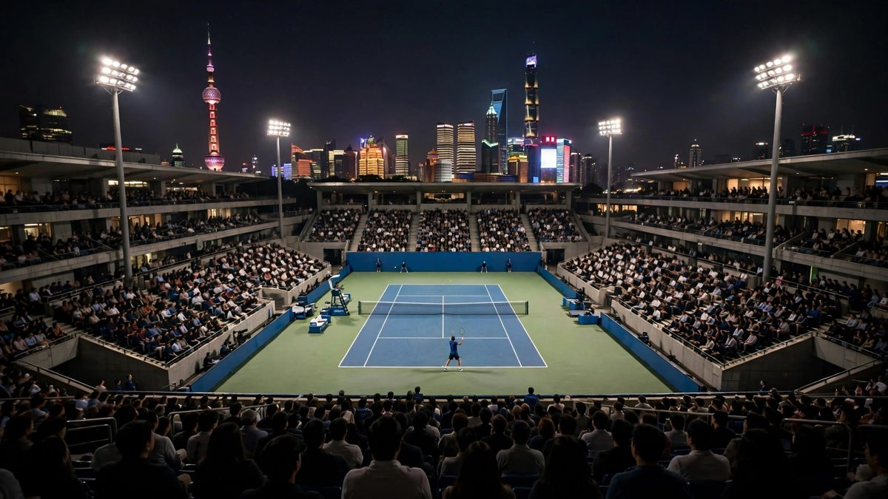

Jodar, 20 ans, devient le plus jeune demi-finaliste de Shanghai et retrouve Medvedev
Rafael Jodar a renversé Casper Ruud en trois sets vendredi, avec une quatrième victoire de suite après la perte du premier set. Daniil Medvedev a battu Tommy Paul et atteint sa 70e demi-finale sur le circuit.

Points clés
- Mis a jour a 14:34 UTC, le 17 octobre 2026.
- Jodar avait eu besoin de trois sets pour gagner chaque match cette semaine.
- Apres le match, Jodar a dit que c'etait un match tres dur, que les jeux etaient tres serres, et qu'il etait tres content de sa facon de gerer les moments importants.
Mis a jour a 14:34 UTC, le 17 octobre 2026. Rafael Jodar a battu Daniil Medvedev 6-3, 6-4 en demi-finale a Shanghai samedi et atteint sa premiere finale de Masters 1000. A 20 ans, il est le plus jeune finaliste de l'histoire du Masters de Shanghai. Medvedev a sauve trois balles de match sur son service a 5-3 contre lui dans le deuxieme set et a garde son service, mais Jodar a clos le match sur son propre service, avec un coup droit gagnant le long de la ligne. Dans l'autre demi-finale, Alejandro Davidovich Fokina a battu la tete de serie numero un, Alexander Zverev, 5-7, 6-4, 6-3, donc la finale de dimanche est entierement espagnole : Jodar contre Davidovich Fokina.
Jodar avait eu besoin de trois sets pour gagner chaque match cette semaine. Contre Medvedev, il l'a fait en deux sets, et par le chemin difficile dans le match aussi. Le premier jeu a dure 13 minutes. Les deux hommes se sont pris leurs services, Medvedev a sauve des balles de set dans le premier set, et Jodar l'a quand meme pris 6-3. Jodar a pris un temps mort medical avant le deuxieme set, puis a breake tot, a breake encore pour 4-3 quand Medvedev a fait une double faute, et a garde ses nerfs a la fin. Medvedev est tombe au sol en essayant de sauver une balle de match. Dans le deuxieme set, Medvedev a aussi menace de se retirer dans une dispute sur la revision video d'un appel de ligne, avant que le jeu continue et que le ralenti montre que la balle etait bonne.
Apres le match, Jodar a dit que c'etait un match tres dur, que les jeux etaient tres serres, et qu'il etait tres content de sa facon de gerer les moments importants. Davidovich Fokina a frappe 36 coups gagnants contre Zverev en deux heures et deux minutes, a pris le deuxieme set avec son premier break du match, et a breake encore pour 2-0 dans le troisieme. C'est sa deuxieme finale de Masters 1000, apres Monte-Carlo en 2022. Zverev, qui a deja assure la place de numero un de fin d'annee, a dit qu'il etait plat, que la fatigue l'avait rattrape, et qu'il avait besoin d'une pause.
Rafael Jodar est devenu vendredi 16 octobre le plus jeune demi-finaliste de l'histoire du Masters de Shanghai. L'Espagnol de 20 ans a renversé Casper Ruud 4-6, 6-4, 6-3 en quarts de finale. Il affrontera Daniil Medvedev pour une place en finale.
Medvedev, ancien numéro un mondial, a battu l'Américain Tommy Paul 6-3, 1-6, 6-3 dans l'autre quart de finale joué vendredi. Le Russe, tête de série numéro 5, est le seul ancien champion de Shanghai encore en lice. Il a gagné le titre en 2019.
Quatre retours gagnants de suite pour Jodar
Jodar a perdu le premier set pour le quatrième match de suite dans ce tournoi, et il a gagné pour la quatrième fois de suite. C'est sa première participation au Masters de Shanghai, un tournoi ATP Masters 1000, et sa première année complète sur le circuit ATP.
Ruud, ancien numéro deux mondial norvégien, a pris l'avantage au début. Il a gagné le premier set 6-4 et bien protégé son service. Jodar a dit après le match que Ruud avait mieux joué les points importants au début, et que le service du Norvégien avait fermé ses occasions de break.
Le match a basculé en fin de deuxième set. Jodar a breaké pour mener 5-4, puis a gagné le set sur son service sans perdre un point. Dans le troisième set, il a breaké Ruud trois fois de plus et a conclu la victoire en deux heures et 20 minutes. Sur les deux derniers sets, il a pris le service adverse cinq fois.
Medvedev se reprend après un set perdu
Medvedev a bien commencé face à Paul, tête de série numéro 15. Il a gagné le premier set 6-3, puis a perdu le fil dans le deuxième, cédé 1-6. Il s'est repris dans le troisième, a mieux servi et a clos le match en deux heures et huit minutes. Il a réussi 16 aces et 31 coups gagnants.
Cette victoire est la 70e demi-finale de la carrière de Medvedev sur le circuit. Elle sert aussi sa course pour une place aux Finales ATP de Turin. Il a gagné son troisième titre de la saison le mois dernier à Hangzhou.
Medvedev a loué la puissance de Jodar après le match et a dit que la demi-finale serait leur premier duel. Il a affirmé qu'un joueur qui frappe aussi fort est dur à contenir quand il trouve son rythme, et qu'il lui faudrait son meilleur niveau.
L'autre demi-finale
La tête de série numéro un, Alexander Zverev, double champion en Grand Chelem, affronte l'Espagnol Alejandro Davidovich Fokina dans l'autre demi-finale. Les vainqueurs des deux matchs se retrouveront en finale à Shanghai.
Pour Jodar, la semaine a déjà changé sa saison. À 20 ans, pour son premier tournoi ici, il a battu un ancien numéro deux mondial après avoir perdu le premier set, établi un record qu'aucun joueur aussi jeune n'avait atteint dans cet événement, et s'est placé à une victoire d'une finale de Masters 1000 dès sa première année complète sur le circuit. La demi-finale contre Medvedev est le test le plus dur qu'il ait connu. Medvedev a déjà atteint ce stade 69 fois.
Chronologie
- Oct 16, 2026Jodar renverse Casper Ruud 4-6, 6-4, 6-3 et devient le plus jeune demi-finaliste de l'histoire du Masters de Shanghai.
- Oct 16, 2026Daniil Medvedev bat Tommy Paul 6-3, 1-6, 6-3 et atteint la 70e demi-finale de sa carrière sur le circuit.
- Oct 17, 2026Jodar bat Medvedev 6-3, 6-4 en demi-finale et devient le plus jeune finaliste de l'histoire du Masters de Shanghai. Davidovich Fokina bat Zverev 5-7, 6-4, 6-3, ce qui donne une finale entierement espagnole le 18 octobre.
Sources
- Reuters: Medvedev sees off Paul to set up Shanghai semi with comeback king Jodar
- Associated Press via The Score: Jodar beats Ruud to make Shanghai Masters history
- Reuters: Davidovich Fokina ousts top seed Zverev to reach Shanghai Masters final
- Associated Press via Sportsnet: Davidovich Fokina upsets Zverev to reach Shanghai Masters final
- SuperSport: Zverev, Medvedev ousted with Spaniards to clash for Shanghai title
- Tennis365: Rafael Jodar reacts after beating Daniil Medvedev to reach first Masters final in Shanghai